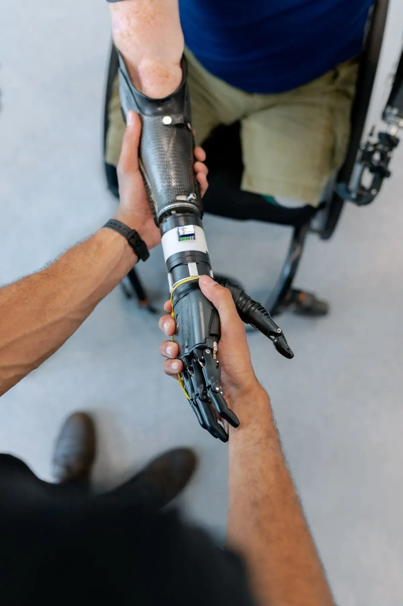

What to Expect at Your First Prosthetic Leg Fitting
A simple, step-by-step look at what happens from your first assessment to the day you walk out on your new leg.

ISPO certified prosthetists & orthotists
Custom artificial limbs, braces and insoles for adults and children in Rawalpindi. We assess, measure, fit and follow up, so your device feels right in everyday life.


AIM Rehab is a prosthetic and orthotic clinic in Rawalpindi. We make and fit artificial limbs, leg braces, spinal braces and foot orthotics for adults and children.
Every device starts with a proper check of your body and your goals. Then we build it to your measurements, so it fits you and the way you live.
Below-knee and above-knee artificial legs, built around a socket that fits you well and feels steady.

Artificial arms and hands, from simple passive designs to more advanced options, matched to how you use your hands.

Custom leg braces that support weak muscles, control the ankle or knee and help with problems like foot drop.

Braces for scoliosis, back injuries and healing fractures, fitted to hold you in the right position without rubbing.

Braces and mobility support for children with growing needs, fitted with patience and checked often as they grow.

Insoles made from the shape of your feet to help with heel pain, flat feet and pressure problems.

Living with limb loss or a weak joint is tiring. The right device can make daily life easier, but only if it fits well and you know how to use it. That's where we put our effort.
Your first visit is mostly a conversation. We ask about your goals, your daily routine and what has been hard. Then we check your limb, your joints and the way you walk or use your hands.
We take a cast or careful measurements and build the device to that shape. You try it before it's finished, so we can fix the fit early instead of after you've gone home.
A new limb or brace takes practice. We teach you how to put it on, how to care for your skin and how to build up the hours you wear it, step by step.


A new limb or brace rarely feels perfect on day one. Your skin settles, your muscles get stronger and you start using the device in new ways. That's normal.
So we don't stop at handover. We check the fit, make small changes and help you get used to it, one visit at a time. The chart shows how each step builds on the last.
Book a consultationAssess
Find out what will really help you
Build
Made to fit your body, not off a shelf
Review
Help once you start using it


Prosthetist & Orthotist · ISPO Certified

Prosthetist & Orthotist · ISPO Certified


A simple, step-by-step look at what happens from your first assessment to the day you walk out on your new leg.

The letters look confusing, but they just tell you which joints the brace covers. Here's how the three main leg braces compare.

Some soreness is normal at first. Real pain isn't. Here's how to tell the difference and stay comfortable in your new leg.
We're inside Nelson Medical Complex on Abid Majeed Road, opposite MH Gate 6 in Tench Bhata. It's a short drive from most of Rawalpindi and Islamabad.